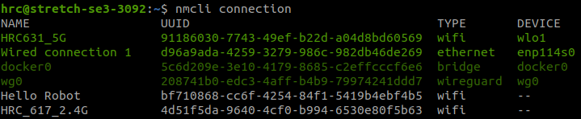

4. ETH over SSH¶
在某些情況下不方便或無法使用 router 時，可以使用 Ethernet（乙太網路）實體連接兩台裝置進行通訊。
即便沒有 Wi-Fi，也能穩定 SSH 連線並監控目標機器的運作狀態。
推薦資源
SSH 金鑰驗證、設定檔等基礎操作，請先參閱 O-Week 的 2. SSH。
1. 背景¶
1-1. 使用場景¶
實驗室常見的連線拓撲如下：
| 情境 | 說明 |
|---|---|
| 機器人現場除錯 | 筆電以網路線直連機器人，不依賴 Wi-Fi |
| 無 router 環境 | 展場、戶外或 router 故障時仍能連線 |
| 穩定低延遲通訊 | 有線連線適合 ROS 2、影像串流等流量 |
| 搭配 Zenoh / DDS | 跨機通訊的前置網路設定，詳見 5. Zenoh Middleware |
1-2. 與 Wi-Fi SSH 的差異¶
整體流程與 Wi-Fi 下的 SSH 幾乎相同，主要差別在於：
- 需手動設定靜態 IP（乙太網路直連時通常沒有 DHCP server）
- 需確認使用的是正確的 Ethernet 介面（如
eth0） - 兩端 IP 須在同一子網（例如
192.168.10.0/24）
| 項目 | Wi-Fi SSH | ETH over SSH |
|---|---|---|
| IP 取得 | 通常由 router DHCP 分配 | 需手動設定靜態 IP |
| 網路硬體 | 無線網卡 | 乙太網路埠 + 網路線 |
| 連線穩定度 | 受訊號影響 | 有線，較穩定 |
| SSH 設定 | 相同 | 相同 |
2. 流程概覽¶
整體步驟
- 以乙太網路線連接兩台 Linux 裝置
- 分別在兩端設定靜態 IP
- 以
ping確認雙方可互通 - 確認 SSH 服務已啟用
- 使用 VSCode Remote SSH 或終端機連線
| 機器 | 角色（範例） | IP |
|---|---|---|
| Local Host | 開發用筆電 | 192.168.10.1 |
| Remote Host | 機器人（Stretch 3 等） | 192.168.10.2 |
3. 靜態 IP 設定¶
插入乙太網路線後，透過 nmcli（NetworkManager Command-Line Interface）設定靜態 IP。
3-1. 檢查連線狀態¶
在兩台機器上分別執行：
幾點注意：
- 每行列出一個網路連線設定，UUID 是各規則的唯一識別碼
- 綠色表示正在使用；白灰色表示已儲存但目前未啟用
- 插入 ETH 後，系統會自動選用一個現有規則；若從未設定過，通常會產生
Wired connection 1 - 設定檔可手動命名，並可綁定特定 MAC address
nmcli connection 範例輸出

同時確認乙太網路介面名稱（常見為 eth0 或 enp*）：
3-2. 設定雙方 IP¶
將 "<name>" 替換為上一步查到的連線名稱（例如 Wired connection 1 或 stretch3）。
為何 gateway 留空？
點對點乙太網路直連不需要預設閘道；設定空字串可避免系統誤將流量導向不存在的 gateway。
3-3. 驗證連線¶
在 Local Host 上：
在 Remote Host 上：
雙方都能收到 reply 即代表 Layer 3 連通正常。
Checkpoint
- 兩台機器能互相
ping成功。 ip a顯示乙太網路介面已設定正確的靜態 IP。
4. SSH 連線¶
靜態 IP 設定完成後，其餘 SSH 操作與 Wi-Fi 環境相同。
首次連線或需設定金鑰驗證，請參考 2. SSH — 實戰練習。
Checkpoint
- 能在 VSCode 中開啟 Remote Host 的資料夾，毋須輸入密碼（若已設定金鑰）。
- 理解 ETH 直連與 Wi-Fi 連線在 SSH 設定上無差異，差別只在 IP 設定方式。
5. nmcli 進階操作¶
以下是設定完成後，管理 NetworkManager 連線規則的常用指令。
5-1. 修改規則名稱¶
將 "<old-name>" 改為易辨識的名稱（例如機器人型號）：
修改名稱範例

5-2. 顯示規則詳細內容¶
5-3. 切換連線規則¶
當同一介面有多組規則（例如 Wi-Fi 與 ETH 各一組）時，可指定介面啟用特定規則：
範例：
6. 常見問題¶
6-1. ping 不通¶
- 確認網路線已插好，兩端 link 燈有亮
- 確認
"<name>"設定的是正在使用的 ETH 連線規則 - 確認兩端 IP 在同一子網（如
/24） - 暫時關閉防火牆測試：
sudo ufw status
6-2. IP 設定後仍無法連線¶
- 執行
sudo nmcli connection up "<name>"重新啟用規則 - 以
ip a確認介面是否已套用新 IP - 若 IP 未更新，可嘗試
sudo nmcli connection down "<name>"後再up
6-3. 同時使用 Wi-Fi 與 ETH¶
筆電可同時連 Wi-Fi 與 ETH。SSH 時請確認連到正確 IP；
若路由衝突，可暫時停用 Wi-Fi 或調整 metric，優先走 ETH 介面。